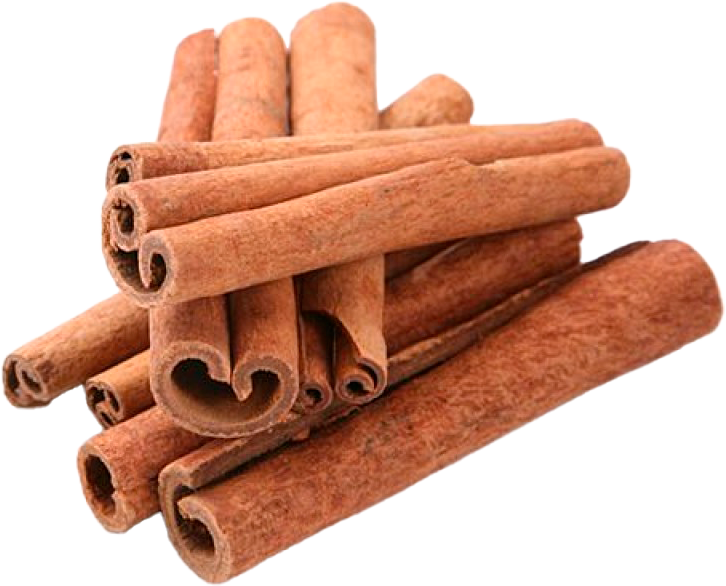
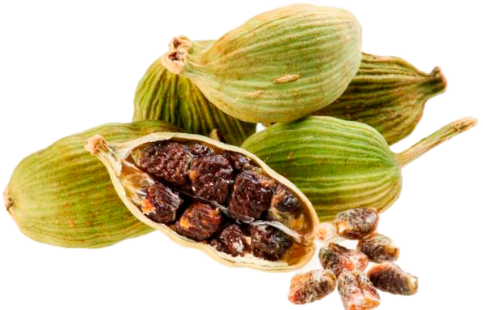
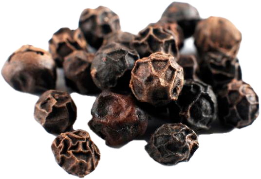
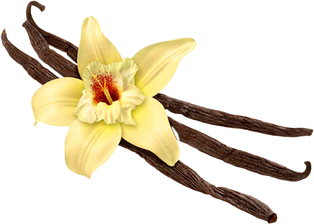
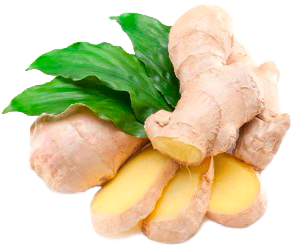
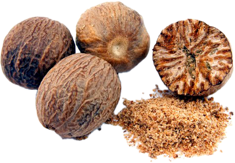
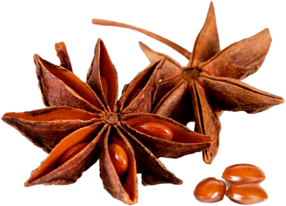
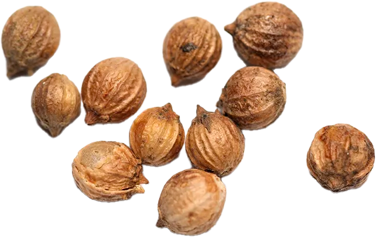
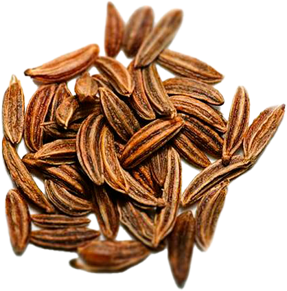
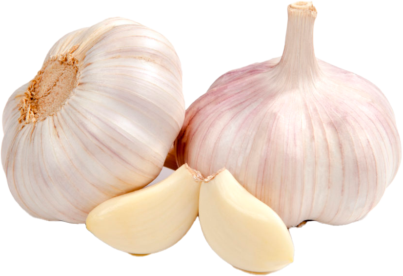

Any dish or drink can be made much tastier and more interesting if you add different spices!

Cinnamon gives coffee a special, sweet aroma and taste. It can be added both during cooking and in the finished drink. The spice has a warming and anti-inflammatory effect, therefore it is a useful additive in the treatment of colds.

Cardamom has a beneficial effect on the work of the heart and stomach, has soothing properties, and is also a caffeine neutralizer. The spice is quite odorous, gives the drink a sharpness. To add cardamom to coffee, it is ground, a minuscule amount is poured into the turk so that the drink does not lose its natural flavor.

Black pepper -The burning seasoning perfectly complements the fragrant drink. Two peas are enough to cleanse the body of accumulated harmful substances, added strength, helped in the treatment of respiratory diseases. Coffee lovers with black pepper are people with a strong character and a delicate taste.

Vanillin -The sweet aroma of vanilla makes coffee delicious and delicate. For the drink, both an additive ground into powder and in the form of a pod is suitable. Coffee with vanilla lifts the mood, calms the nerves, successfully fights sleep disorders.

Ginger -Although ginger powder is considered a spicy seasoning, but in coffee its taste is barely perceptible. Ginger increases immunity and is able to cheer up very quickly, relieve fatigue. It also has an effect on blood circulation in the body. When brewing coffee, you should not add more than half a teaspoon of spices to the turkey.

Carnation-Cloves have a specific aroma, so coffee with this spice is preferred by real gourmets. The taste of the seasoning is bitter, so you should be careful with the proportions when cooking. Coffee with cloves will be useful for people engaged in mental activity, as it perfectly stimulates the brain. Cloves improve digestive processes, and protect against colds in winter.

Nutmeg-A small pinch of spice sprinkled on top of the coffee foam or added during cooking will give the drink a tart, astringent taste. Nutmeg is useful for men's health, heart function, brain activity. This coffee perfectly tones the whole body.

Badian-Fragrant stars will not only decorate the drink, but also fill it with essential oils. A well–known property of star anise is the ability to eliminate problems with throat diseases, restore a missing voice, soften a cough. Coffee with star anise can be equated to a medicine created by nature itself. The spice is also useful for the nervous system and the work of the stomach.
Bay leaf-The well-known smell and taste of bay leaf wonderfully combines with the coffee aroma. This drink is prepared to get rid of headaches, high blood pressure and depressive states.

Coriander is called cilantro seeds, which, along with the herbaceous part of the plant, have a persistent aroma and a set of useful properties. In coffee, spice is most often added to solve digestive problems, and also has a slight laxative effect. Coriander is rich in vitamins and trace elements.

Cumin-The cumin drink turns out to be very spicy, as the spice has a bright taste. This coffee will appeal to lovers of new sensations. Cumin increases appetite and provokes copious secretion of gastric juice. It is contraindicated for people suffering from gastritis. Coffee with cumin perfectly soothes the nervous system, has anti-inflammatory properties, refreshes the breath.
